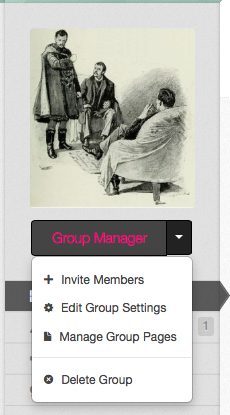
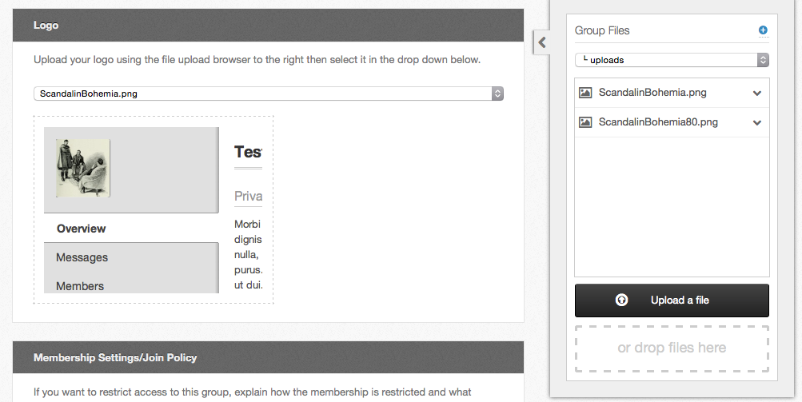

Hub users
Customization
What a group manager can change about a group from the site: its logo and settings, the pages that make up its content, the categories those pages are filed under, and — on a super group — the modules around them.
Two entries in the Group Manager menu do all of it: Edit Group Settings and Manage Group Pages.

Members holding a role can reach them too: Edit Group Settings needs the role permission of the same name, Manage Group Pages needs Create/Edit Group Pages & Categories. See Member functions.
Group settings
Group Manager → Edit Group Settings opens the same form used to create the group, with everything filled in. The sections are described in Creating and deleting a group. The two that shape how the group looks are Logo and, under Privacy Settings, Access Permissions.
Select Save Group when you are done. Saving emails the group's managers a summary of what changed.
The group logo
The Logo section only exists once the group has been saved at least once.
- Open Edit Group Settings.
- In the file browser on the right of the page, select Upload a file —
or drop a file onto it — to put the image in the group's
uploadsfolder. - Choose it from the Logo drop-down. A preview appears below.
- Select Save Group.

Which tabs appear
Access Permissions, in the Privacy Settings section, lists every tab groups can have on this hub. Each one takes a value:
| Value | Who reaches the tab |
|---|---|
| Any HUB Visitor | Everyone, signed in or not |
| Registered HUB Users | Anyone with a hub account |
| Group Members Only | Members of this group |
| Disabled/Off | Nobody. The tab is removed from the menu |
Overview cannot be turned off. Whatever is preselected is the hub's own default for that tab until you change it.
Group pages
The group's content pages live behind Group Manager → Manage Group Pages. The screen has two tabs, or three on a super group:
- Manage Pages
- Manage Page Categories
- Manage Modules — on a super group, or when the hub has switched modules on for ordinary groups
Upload Images/Files in the header opens the group's file browser, the same one used for the logo. Back to Group returns to the group.
Creating a page
- Open Manage Group Pages and select New Page.
- Fill in Title. It is required.
- Fill in Alias if you want to choose the segment the page gets in the URL. Aliases take lowercase letters, digits, underscores and dashes; spaces are removed.
- Write the page in the Content editor. It is required.
- On the right, set Status — Published or Unpublished — and Privacy, which is either Inherits overview tab's privacy setting or Private Page (Accessible to members only).
- Under Settings, optionally pick a Category, a Parent page and an Order, and choose whether the page shows Comments. Comments default to Use Group Setting, from the group's own Page Settings.
- Select Save Page, or Apply Changes from the drop-down beside it to save and stay on the form.
An unpublished page stays off the group's menu, but managers can still open and edit it. A private page is restricted to group members even when the Overview tab is open to everyone; the page list marks it with a padlock.
Editing a page
From the Manage Pages list, select the page's title, or Manage Page on its row. The row's drop-down also offers Edit Page, Preview Page, Publish Page/Unpublish Page, Version History and Delete Page.
The list itself shows each page's URL, a padlock on private pages, a coloured stripe for its category, and who has it open if someone is editing it. Filter the list by category, or search it by title.
You can also edit a page from the group itself, if the group's Author Details page setting is on: the edit control sits in the byline at the foot of the page. With Author Details off there is no byline and no control, so go through Manage Group Pages instead.
Reordering and nesting pages
Drag a page by the handle at the right of its row in Manage Pages. Drop it on another page to make it a child. The hub sets how deep the nesting may go — five levels by default.
Version history
Every save that changes a page's content creates a new version.
- Open the page's Version History.
- Step through the versions with Previous and Next, jump straight to a version number with the menu between them, and use View Source Diff to see what changed in the markup.
- Restore This Version copies the version you are looking at back to the top of the history as a new version. Nothing is thrown away.
Deleting a page
Select Delete Page from a page's drop-down in Manage Pages. The group's home page cannot be deleted, published or unpublished.
Page categories
Categories group pages together and give each one a colour, used as a stripe in the page list and as a filter.
- Open Manage Group Pages and select the Manage Page Categories tab.
- Select New Page Category.
- Give it a Title, and a Color if you want one.
- Select Save Category.
Each row's Manage Category drop-down offers Edit Category and Delete Category, and shows how many pages the category holds.
You can also make a category while editing a page: choose Other in the page's Category menu.
Modules
The Manage Modules tab puts blocks of content in the positions around a group's pages. It is present for every super group; for an ordinary group it appears only when the hub's administrators have switched group modules on. The screen is described in Super Groups.
PHP and JavaScript in a page
An ordinary group's page content is filtered: <script> blocks and PHP tags
are stripped out before the page is stored. Nothing you can do from the site
changes that.
There are two ways round it, and both need an administrator:
- The group is made a super group. Its pages may then contain PHP and JavaScript, and it gets a template, modules and a web space of its own.
- Or the group is left an ordinary group and its Trusted content page setting is turned on, which lifts the filtering for that one group without making it a super group.
In either case content that contains <?, <?php or <script is saved
unapproved and mailed to the hub's page approvers. Until one of them
approves it, visitors see the previously approved version, or a placeholder
saying the page is awaiting approval. The page shows Pending Approval in
Manage Pages meanwhile.
The group calendar
Members can take a group's events away with them, in two ways. Both live in the Subscribe box below the calendar on the group's Calendar tab.
Tick the calendars you want — the group may have several, each with its own colour, plus Uncategorized Events — then:
- Download saves an iCalendar file (
.ics) you import into your own calendar application. It is a snapshot: later changes on the hub are not reflected. - Subscribe hands the calendar to your default calendar application as a live subscription, so changes made on the hub show up in your calendar.
The box also shows the subscription address, so you can copy it into an application yourself.
If the group's Calendar tab is restricted to registered users or to group members, you are asked for your hub username and password when you subscribe.
A calendar that is not publishing events is listed but cannot be ticked.
Rewritten and checked against 2.4-main @ 1924c22171 on 2026-09-09.